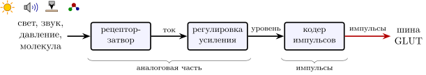
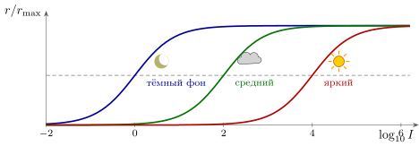
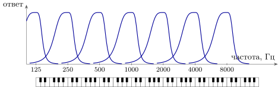

11.1 Датчик как преобразователь
На рис. 10.1 данные входили в машину слева, из блока «датчики». Теперь откроем этот блок. Для инженера каждый орган чувств — это преобразователь с аналоговым входным каскадом и аналого-цифровым преобразователем в конце, только цифры на выходе — не числа, а импульсы.
Схема у всех органов чувств одна и та же (рис. 11.1). Физическая величина — свет, давление, колебание, молекула — действует на белок-рецептор в мембране чувствительной клетки. Этот белок работает как затвор: он сам или через короткую цепочку реакций открывает ионный канал. Возникает рецепторный ток, а с ним — аналоговое напряжение на мембране. Дальше напряжение проходит регулировку усиления и попадает в кодер импульсов — уже знакомый интегрирующий нейрон (2.1), который превращает уровень в частоту и моменты импульсов. Выход почти всегда один и тот же: чувствительные нейроны глаза, уха, обоняния и кожи выбрасывают глутамат, так что входы подключаются прямо к шине GLUT.

Одна деталь хорошо знакома электронщику. В глазу и в ухе самые первые клетки импульсов не выдают вовсе: они передают соседям плавное напряжение, как аналоговый каскад на плате. Импульсы появляются только там, где сигнал надо везти далеко. Аналоговый сигнал на расстоянии миллиметров затухает и зашумляется, а импульс, как мы видели в главе 1, доходит до конца провода той же высоты. Оцифровывают там, где начинается длинная линия.
11.2 На пределе физики
Датчики мозга работают у физических пределов чувствительности. Датчик света в темноте отвечает на один фотон: поглощение одной частицы света даёт ток около пикоампера, заметный на фоне собственного шума [91]. Датчик звука замечает смещение своего чувствительного пучка меньше чем на нанометр [92].
Когда света мало, точность ограничивает не датчик, а сам свет: фотоны приходят случайно, пуассоновским потоком. Если за время накопления в датчик попадает в среднем фотонов, их число дрожит на . Чтобы прибавка была заметна, она должна быть в несколько раз больше этого дрожания, и различимая доля изменения яркости равна
| (11.1) |
Это та же формула, что и для числа импульсов (4.2): дробовой шум фотонов и дробовой шум импульсов подчиняются одному закону. В темноте глаз может улучшить точность только одним способом — дольше копить фотоны, и время накопления действительно растёт до десятых долей секунды. Поэтому в сумерках мы видим медленнее.
11.3 Динамический диапазон: регулировка усиления
Самая трудная инженерная задача у датчиков — диапазон. Освещённость от звёздной ночи до солнечного снега меняется примерно на десять порядков, интенсивность звука от порога слышимости до болевого — на двенадцать. А частота импульсов меняется от нуля до нескольких сотен в секунду, меньше чем на три порядка. Линейно такой вход в такой выход не уложить.
Решение то же, что у любого приёмника: автоматическая регулировка усиления. Ответы чувствительных клеток глаза хорошо описываются формулой
| (11.2) |
где — яркость, при которой ответ достигает половины [93]. Сама по себе (11.2) охватывает лишь два-три порядка. Но не постоянна: при долгой работе на ярком фоне она растёт вслед за средней яркостью. Кривая ответа сдвигается вдоль логарифмической оси яркости и всякий раз ставит свой крутой участок туда, где сейчас находится вход (рис. 11.2). Это то же деление на общую активность, что и шунтирующее торможение главы 3 [14], только знаменатель здесь — средняя яркость за последние секунды.

У регулировки есть цена, знакомая по главе 4: датчик сообщает не яркость, а яркость по отношению к фону. Постоянный вход постепенно перестаёт вызывать ответ, а каждое изменение вызывает. Входы машины с самого начала говорят о переменах, а не об уровнях, и в этом та же экономия импульсов, что и в утверждении 4.5 [68]. Отсюда и включающие и выключающие датчики главы 2 [56]: одни сообщают, что стало ярче, другие — что темнее.
Инженеры повторили этот приём в событийных камерах. Такая камера не снимает кадры по часам: каждый её пиксель сам, без общего такта, выдаёт событие «ярче» или «темнее», когда логарифм яркости изменился на заданную долю [94]. Это ровно двухпроводный код включения—выключения из главы 2, воплощённый в кремнии, и он даёт камере диапазон и быстроту, недоступные обычной матрице [134].
11.4 Глаз: сжатие до провода
В глазу около датчиков света [107], а выходных нейронов, которые везут изображение в мозг, — около миллиона. Прежде чем сигнал покинет глаз, его сжимают примерно в сто раз. Главные приёмы сжатия нам знакомы. Каждый выходной нейрон отвечает на разницу между яркостью в маленьком пятне и яркостью вокруг него — это вычитание соседей через торможение, как в главе 3. Ровные участки картинки почти ничего не стоят, а края и перемены передаются. Разные выходные нейроны специализированы: одни сообщают о посветлении, другие о потемнении, третьи о движении в определённую сторону (рис. 3.1); у мыши таких выходных каналов насчитали больше тридцати [151].
Какова пропускная способность получившегося кабеля? У морской свинки по записям выходных нейронов измерили около тысяч бит в секунду на таких нейронов; пересчёт на миллион выходных нейронов человека даёт порядка бит в секунду [95] — столько же, сколько старый сетевой кабель на десять мегабит. При средней частоте в несколько импульсов в секунду на нейрон это несколько бит на импульс, как и получалось в главе 4.
11.5 Ухо: банк фильтров
Ухо решает другую задачу: звук надо разложить по частотам. Инженер поставил бы банк полосовых фильтров, и ухо делает именно это механически. Звуковое колебание бежит по упругой перегородке, свойства которой плавно меняются вдоль её длины, и каждый участок резонирует на свою частоту. Датчики, сидящие на участке, отвечают только на свою полосу (рис. 11.3). Частоты разложены по месту примерно логарифмически: каждой октаве достаётся похожая доля датчиков. Номер сработавшего датчика — это частота, код местом из главы 4.

Резонаторы уха не пассивны. Часть датчиков сама раскачивает перегородку в такт звуку и усиливает слабые колебания в тысячи раз по амплитуде (на –дБ), а с ростом громкости усиление падает [292, 96]. Для инженера это усилитель с положительной обратной связью, поставленный у самой границы самовозбуждения, — та же жизнь на грани, что и у сети главы 3: у границы система особенно чувствительна к малым сигналам. Сжатие громкости здесь делается тем же усилителем: тихое усиливается сильно, громкое — слабо.
У уха есть и второй код. На низких частотах импульсы нейронов идут в фазе со звуком: нейрон срабатывает на определённом участке каждой волны, хотя и не на каждой волне. У морской свинки привязка к фазе начинает слабеть около Гц и ещё заметна примерно до кГц [298]. Так в моментах импульсов сохраняется точное время звука, а из него — разница прихода звука в два уха, по которой сеть главы 2 находит направление [57]. На высоких частотах импульсы за волной не успевают, и остаётся только код местом. Одно ухо пользуется обоими кодами главы 4: временем там, где нейроны успевают, и местом там, где нет.
11.6 Остальные датчики
| Чувство | Что измеряет | Как устроен вход | Приём из книги |
| зрение | свет | датчиков, сжатие в раз, бит/с | регулировка усиления, вычитание соседей, два провода, направление движения |
| слух | давление воздуха | механический банк фильтров, активный усилитель | код местом и код временем, задержки |
| осязание | давление, вибрация | быстро и медленно привыкающие датчики | пара «фильтр верхних частот — фильтр нижних» |
| температура | тепло | отдельные датчики тепла и холода | двухпроводный код |
| обоняние | молекулы | типов рецепторов, у каждого датчика один тип | комбинаторный код: запах — набор сработавших типов |
| вкус | вещества в пище | пять качеств: сладкое, горькое, солёное, кислое, умами | меченые линии; часть клеток выбрасывает АТФ или серотонин, а не глутамат |
| положение тела | растяжение мышц | датчики длины и скорости растяжения | обратная связь для регулятора движения |
Остальные чувства собраны в таблице 11.1, и почти в каждой строке узнаётся приём из предыдущих глав. Осязание пользуется парой фильтров: одни датчики давления отвечают на прикосновение и сразу замолкают, другие держат ответ, пока давление есть. Температуру передают два провода, отдельные для тепла и для холода. Самый необычный вход — обоняние. Типов обонятельных рецепторов у человека около четырёхсот, и каждый обонятельный нейрон несёт только один тип [97]. Запах активирует не один тип, а набор, и сообщение — это какие типы сработали. Для инженера это двоичный вектор длиной около четырёхсот, у которого число возможных значений астрономическое.
Утверждение 11.1 (Входы машины). Каждое чувство — преобразователь, который работает у физического предела чувствительности, сжимает огромный динамический диапазон автоматической регулировкой усиления и передаёт по шине GLUT прежде всего перемены. Для этого датчики пользуются теми же приёмами, что и сама машина: двухпроводным кодом, кодом местом, кодом временем и делением на фон. Устройство датчиков измерено; то, что их коды подстроены под наибольшую информацию на импульс, — хорошо обоснованная гипотеза.
Входы, как и всё остальное, работают асинхронно. Каждый датчик выдаёт импульс, когда у него есть что сообщить, а разные чувства приходят с разными задержками: звук — через миллисекунды, свет — через десятки миллисекунд. Как машина сводит их в одну картину мира, если общего такта нет, — одна из задач согласования во времени из главы 10.
11.7 Задачи
Задача 11.1 (). Сколько копить фотоны. В сумерках в датчик попадает фотонов в секунду; прибавка заметна, если она в раза больше дрожания (11.1). (а) Сколько времени нужно одному датчику, чтобы заметить изменение яркости на ? (б) Сколько датчиков надо сложить, чтобы успеть за , и во сколько раз упадёт разрешение по оси?
Ответ
(а) . (б) датчиков, пятно , разрешение хуже в раз.
Задача 11.2 (). Сколько бит в импульсе. (а) Глаз передаёт бит/с по выходным нейронам с частотой – импульсов в секунду. Какую долю ёмкости (4.1) при он использует? (б) Запах включает из типов рецепторов. Сколько бит несёт такой набор и сколько общих типов в среднем у двух случайных запахов?
Ответ
(а) – бита на импульс, – границы (– бита). (б) бит; в среднем общий тип.
Задача 11.3 (). Что умеет одна кривая (11.2). (а) В каком диапазоне яркостей ответ растёт от до от ? Сколько это порядков? (б) Сколько положений сдвигающейся кривой нужно, чтобы покрыть десять порядков яркости? двенадцать порядков громкости?
Ответ
(а) , порядка. (б) и .
Задача 11.4 (). Предел кода временем в ухе. Разница прихода звука в два уха — до . (а) Импульсы идут в фазе с тоном: до какой частоты направление по ним определяется однозначно? (б) Импульс дрожит на , а различать нужно мкс. Сколько нейронов по импульсов в секунду надо усреднить за ?
Ответ
(а) Гц. (б) импульсов, нейронов.
Задача 11.5 (). Событийная камера на кабель глаза. Камера из пикселей с выходом бит/с шлёт событие (адрес и знак), когда в пикселе изменился на . С какой наибольшей скоростью может бежать край длиной пикселей с перепадом яркости ? Сколько кадров в секунду дала бы через тот же выход обычная камера по бит на пиксель?
Ответ
бит на событие, событий/с, событий на пиксель края: пикселей/с. Обычная камера — кадра/с.
Задача 11.6 (). Моделирование: регулировка усиления. Датчик (11.2) подстраивает с в логарифмах, , или линейно, ; фон скачет . Через сколько секунд ответ на пробу восстанавливается до половины привыкшего после скачка вверх и вниз при каждом законе?
Ответ
В логарифмах в обе стороны (теория ); линейно вверх и вниз (теория и ).
Задача 11.7 (). Под какой мир подстроена кривая. При малом постоянном шуме выхода информация о яркости наибольшая, когда , где — функция распределения яркостей. (а) Для какого распределения оптимальна кривая (11.2) и каков его разброс ? (б) Какая кривая оптимальна при пуассоновском шуме выхода?
Ответ
(а) распределён логистически с медианой и масштабом : разброс в натуральных логарифмах, порядка. (б) .